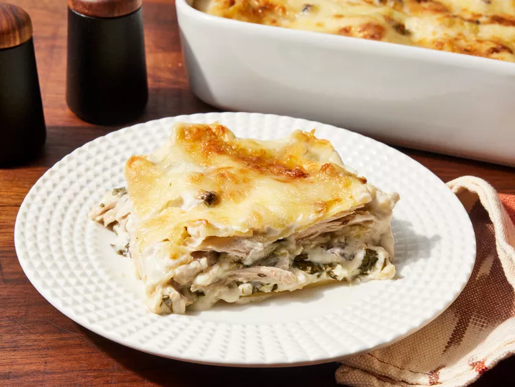
¡Esta fácil lasaña de pollo blanco con espinacas es una versión diferente, pero deliciosa, de la lasaña clásica!
Reúne los ingredientes.
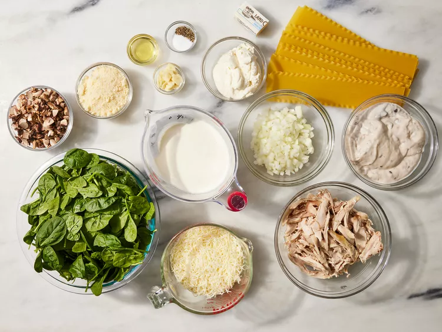
Precalienta el horno a 175 °C (350 °F). Pon a hervir una olla grande con agua ligeramente salada. Agrega la pasta
para lasaña y cocina hasta que esté al dente, de 8 a 10 minutos. Escurre y enjuaga con agua fría.
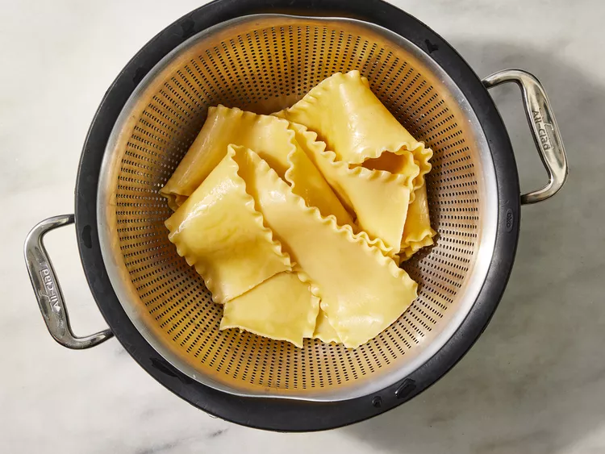
Mezcle la crema espesa, la crema de champiñones, el queso parmesano y la mantequilla en una cacerola a fuego lento; cocine
a fuego lento, revolviendo con frecuencia, hasta que estén bien mezclados.
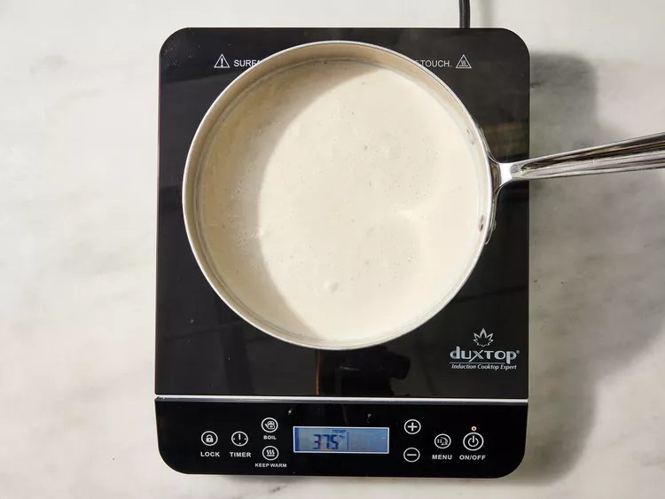
Calienta el aceite de oliva en una sartén a fuego medio. Cocina la cebolla en el aceite de oliva y remueve hasta que esté
tierna. Luego, añade el ajo y los champiñones.
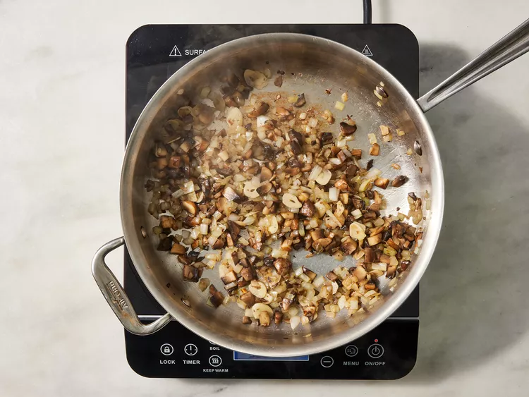
Incorpora el pollo y cocina hasta que esté bien caliente. Sazona con sal y pimienta.
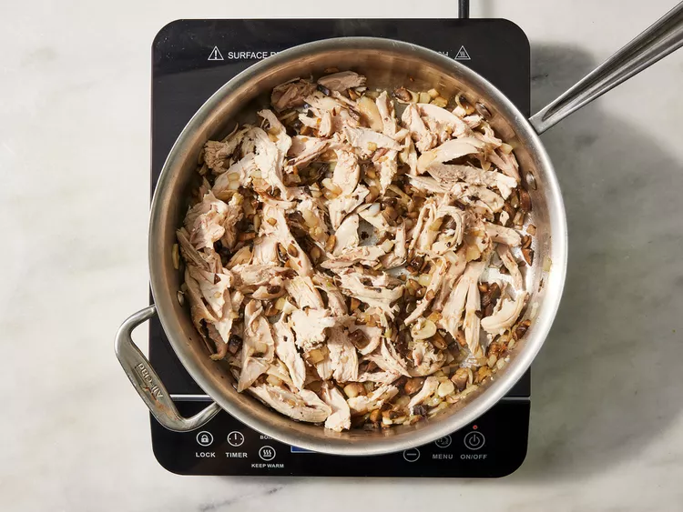
Cubre ligeramente el fondo de una fuente para hornear de 9x13 pulgadas con suficiente mezcla de salsa de crema para cubrir.
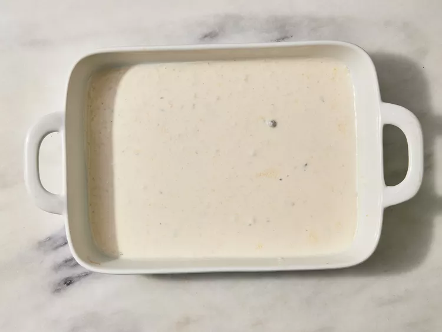
Coloca una capa con 1/3 de las láminas de lasaña, 1/2 taza de ricotta y 1/2 de las espinacas.
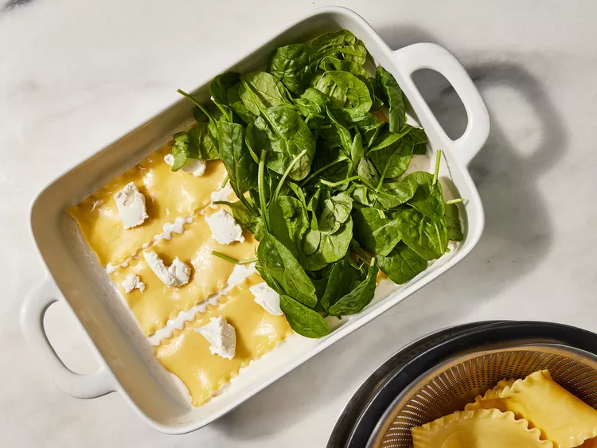
Añade la mitad de la mezcla de pollo y 1 taza de mozzarella. Cubre con 1/3 de la mezcla de salsa cremosa y repite las capas.
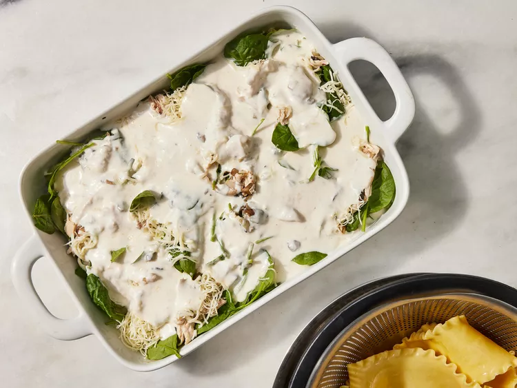
Coloca los fideos restantes encima y úntalos con la salsa restante.
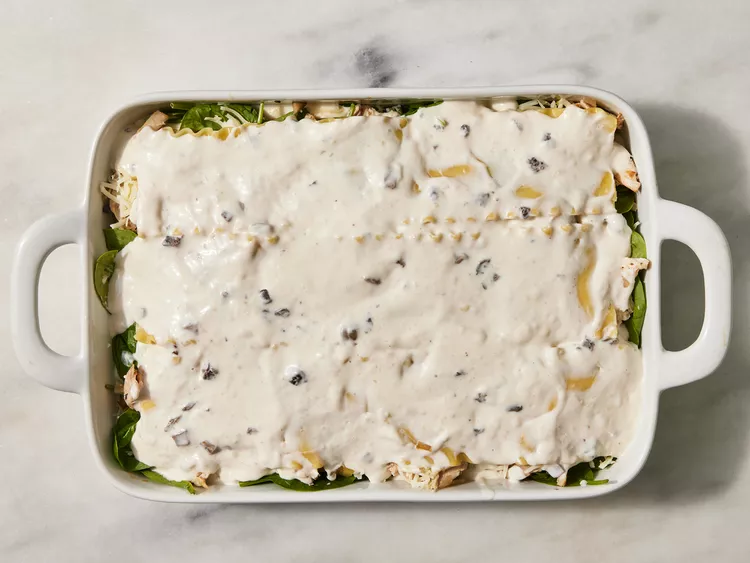
Hornea durante 1 hora en el horno precalentado, o hasta que esté dorado y burbujeante. Cubre con el resto de la mozzarella
y continúa horneando hasta que el queso se derrita y se dore ligeramente.
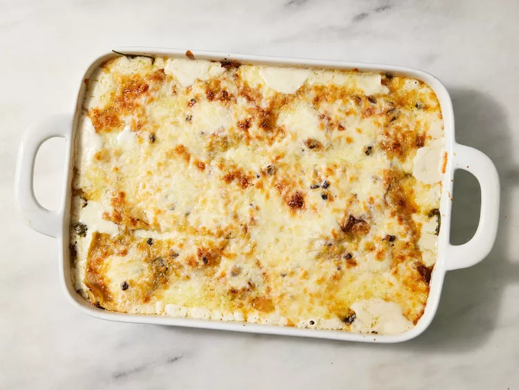